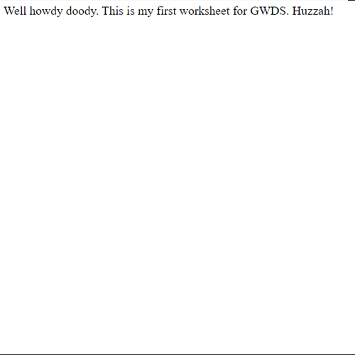
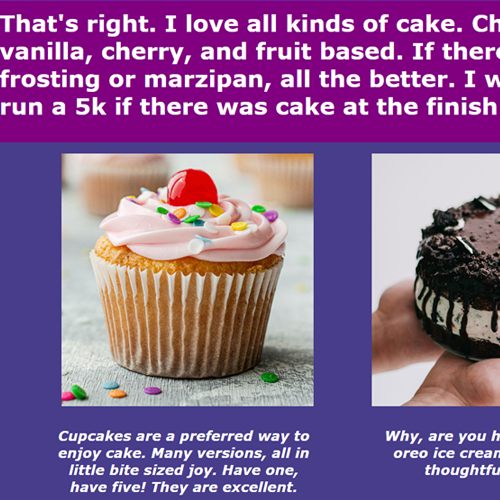
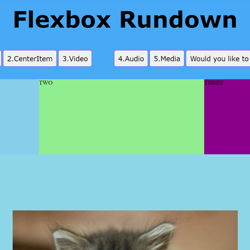

Code
Task 1
 The first worksheet task taught me how to create the basic index for a website. It introduced be to the HTML doctype and body element that is fundamental for any HTMl page.
Here is a link to the GitHub repository for this task.
Clicking on any of the three images will take you to their respective webpages.
Task 2+3
 These next couple tasks introduted me to a lot more than I had anticipated. These things included different elements for different types of texts such as h1,h2 for headings, p for paragraphs, and li for lists. I was then introduced to CSS that taught me how to stylise texts and images. A second webpage was also created that was linked to within the original.
Here is a link to the GitHub repository for these tasks.
Task 4
 The amount of new information ramped up again in this task. New knowledge here included flexbot, creating buttons to link to other pages for the website and adding different forms of media to a website. This by far was the more difficult of tasks but included some of the more useful webpage elements that wold go on to become key elements to my own website.
Here is the link to the Github repository for this task.
I have had some experience with some coding languages in the past (c#, python) but I have never tried using HTML. With this being the first time I've used HTML it was a struggle at first getting used to but slowly working through the worksheets and doing further research using the W3Schools website I was able to pick it up with relative ease. In developing my website I referenced the worksheets a lot in plan how I should structure it. The worksheets helped give me the basic knowledge I would need to develop my website on my own.